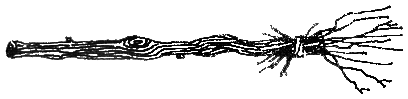

Birinci Bölüm:
Uçan Süpürgenin Evrimi
Şimdiye kadar tasarlanmış büyülerin hiçbiri, büyücülerin insan bedenindeyken herhangi bir yardım almaksızın uçmalarını mümkün kılmıyor. Kanatlı yaratıklara dönüşebilen birkaç Animagus uçmanın keyfini sürüyor, ama onların da sayıları çok az. Biçim değiştirme sonucu kendini bir yarasaya dönmüş bulan cadı ya da büyücüyse uçabilir, ama bir yarasanın beynine sahip olduğundan, daha uçmaya başladığı anda nereye gitmek istediğini unutacaktır. Havalanma oldukça yaygındır, ancak atalarımız yerden bir buçuk metre yükseklikte süzülmekle yetinmiyorlardı. Daha fazlasını istediler. Kuşlar gibi uçmak, hem de bunu üstlerinde kuş tüyleri çıkmadan yapmak istiyorlardı.
Artık İngiltere'deki her evde en az bir tane uçan süpürge bulunduğu gerçeğini öylesine kanıksamışız ki, şöyle bir durup da kendimize bunun nedenini pek sormuyoruz. Süpürge denen o mütevazı şey, niye büyücü ulaşımında kullanılmasına yasal olarak izin verilen tek nesne olmuş? Niye Batı'daki bizler, Doğulu kardeşlerimizin onca sevdiği halıyı benimsememişiz? Niçin uçan fıçıları, uçan koltukları, uçan küvetleri seçmemişiz - niçin süpürgeyi seçmişiz?
Cadılar ve büyücüler, güçlerinin nelere kadir olduğunu fark edebilecek Muggle komşularının bu durumda onlardan faydalanmaya çalışacağını anlayabilecek kadar zekiydiler. Onun için, Uluslararası Büyücülük Sırları Tüzüğü'nün yürürlüğe girmesinden çok önce de kendilerini gizli tutuyorlardı. Evlerinde bir uçuş aracı bulunduracaklara, bunun dikkat çekmeyen, saklaması kolay bir şey olması gerekiyordu. Süpürge bu amaç için idealdi; Muggle'lar tarafından görülmesi durumunda hiçbir açıklama, hiçbir mazeret gerektirmiyordu, ucuzdu ve taşıması kolaydı. Yine de büyüyle uçabilecek hale getirilmiş ilk süpürgelerin birtakım dezavantajları vardı.
Kayıtlar, Avrupa'daki cadıların ve büyücülerin uçan süpürge kullanımının çok eskiye, MS. 962'ye uzandığını gösteriyor. Bu dönemden kalma yaldızlı bir Alman elyazması, yüzlerinde büyük bir rahatsızlık ifadesiyle süpürgelerinden inmekte olan üç sihirbazı resmediyor. İskoç büyücü Guthrie Lochrin, 1107'de yazdığı metinde Montrose'dan Arbroath'a yaptığı kısa süpürge yolculuğunun ardından "kıymık dolu bir popo ve küme küme şişliklerden mustarip olduğundan yakınıyor.
Londra'daki Quidditch Müzesi'nde sergilenen ortaçağdan kalma bir süpürge, Lochrin'in ne tür bir rahatsızlık yaşadığı hakkında bize bir fikir veriyor (bkz. Resim A). Cilalanmamış dişbudak ağacından yapılma gövdesi ve bir ucuna baştan savma bir biçimde tutturulmuş ince fındık dallarından oluşan kuyruğuyla bu süpürge ne rahat ne de aerodinamik. Süpürgeye uygulanmış büyüler de yine basit büyüler: Sabit bir hızda ileri doğru gidebiliyor; yukarı çıkabiliyor, aşağı inebiliyor ve durabiliyor, hepsi o kadar.
O günlerde büyücü aileleri kendi süpürgelerini kendileri yaptığından, bu ulaşım araçları hız, rahatlık ve idare edilebilirlik açısından büyük farklılıklar gösteriyordu. Ancak on ikinci yüzyılda büyücüler hizmette takası öğrendiler. Böylece becerikli bir süpürge imalatçısı, süpürge verip karşılığında kendisinden daha iyi iksir yapan komşusundan iksir alabiliyordu. Süpürgeler daha konforlu hale geldiğinde, artık A noktasından B noktasına ulaşmak için kullanılan bir araçtan ziyade, sırf zevk için binilen araçlar oldular.

Çizim A